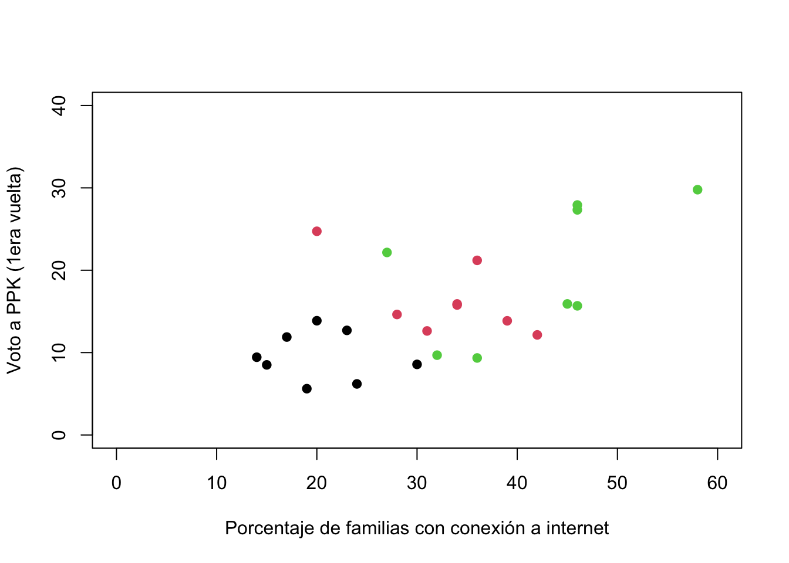
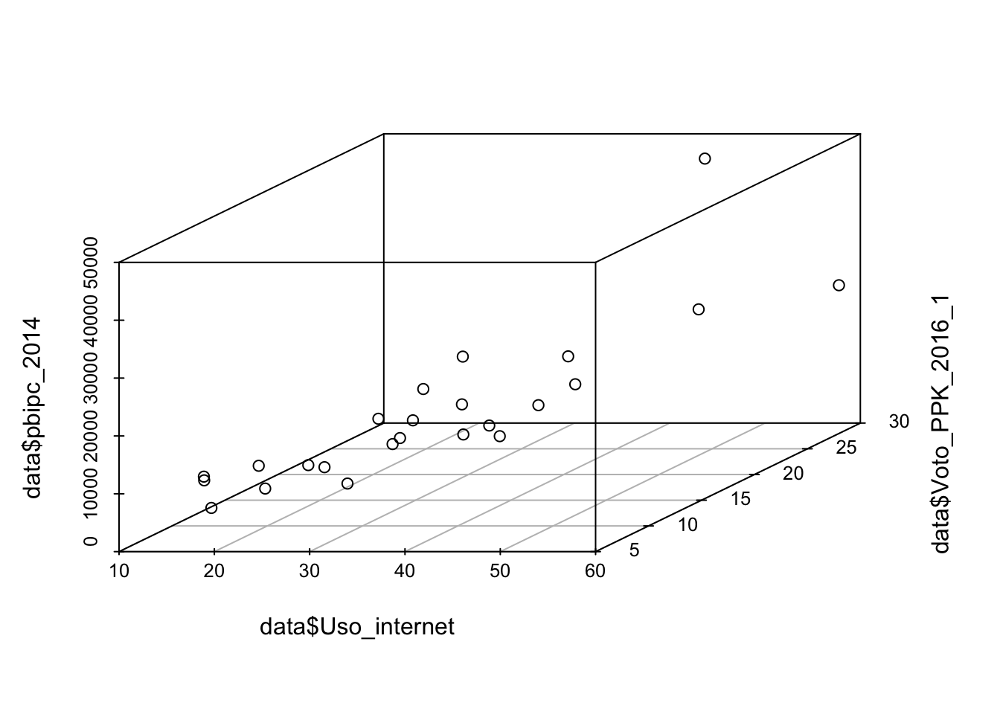
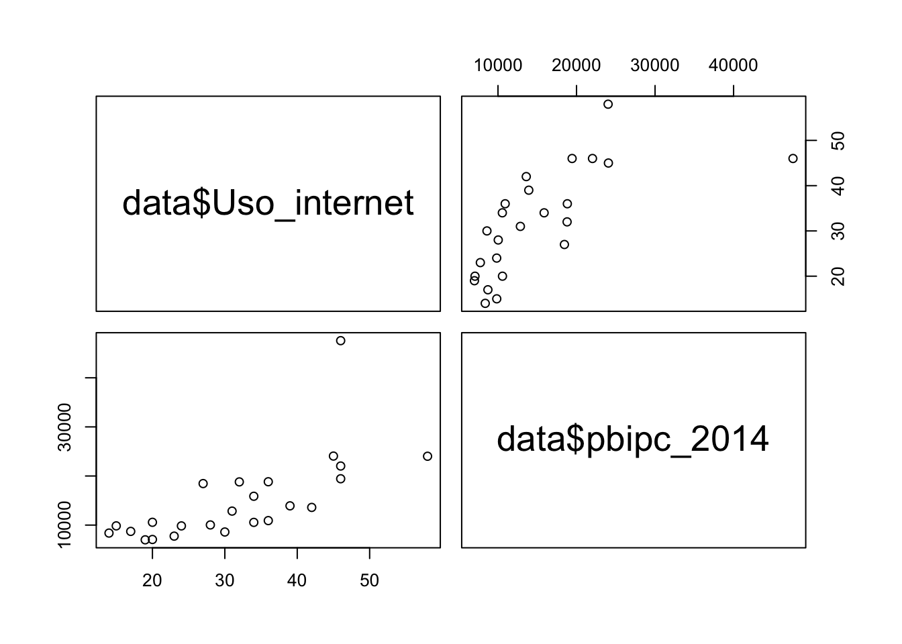
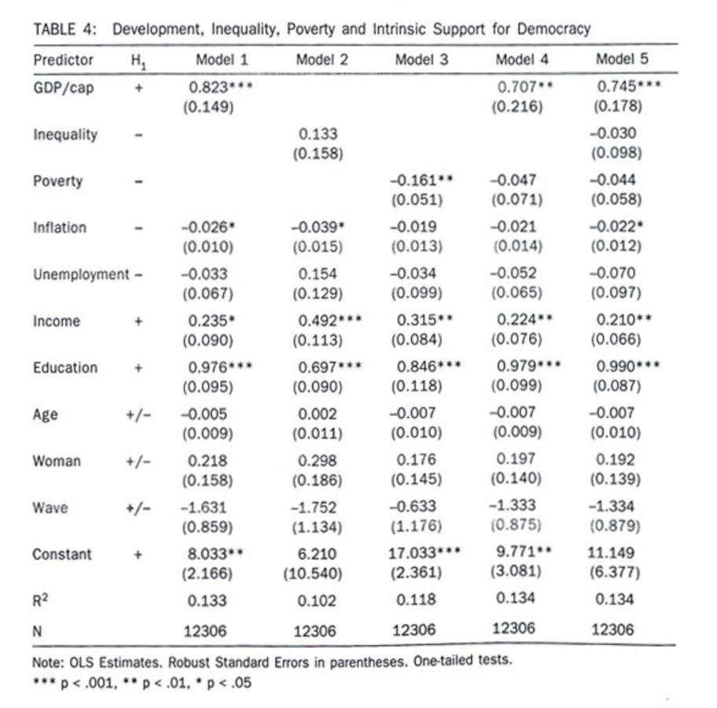

Introducción a la regresión lineal múltiple
El análisis bivariado es un primer paso en el análisis
estadístico. Se encuentran (co)rrelaciones: X - Y
¿Por qué agregar más variables? Se busca aproximarse a la
causalidad: X -> Y
Para aproximarse a establecer causalidad es necesario el análisis
multivariado.
Para hablar de causalidad, se requieren ciertos criterios:
Asociación entre las variables, pero asociación no implica
causalidad.
Orden temporal: que la causa ocurra antes que el efecto.
Eliminación de hipótesis alternativas. Estas hipótesis
alternativas regularmente parten de la literatura.
Control estadístico
Para evaluar (o eliminar) las hipótesis alternativas, se realiza un
“control estadístico”. La idea es:
Evaluar si la asociación entre X - Y permanece si se remueve el
efecto de otra variable, es decir, si se controla por una tercera
variable.
Para controlar por variables importantes, como las
sociodemográficas.
En un experimento se puede controlar por un gran número de
variables desde el diseño. Por ejemplo, se puede asegurar que el sujeto
experimental esté expuesto a las mismas condiciones. Control
experimental.
En los métodos observacionales se puede aproximar un control
experimental agrupando las observaciones en grupos de valores iguales o
similares de las variables de control. Control estadístico.
En la práctica, se analiza la relación entre X - Y para valores
similares o iguales de una variable Z. De esta manera se elimina la
influencia de Z en la relación entre X - Y. Es un paso en el
establecimiento de X -> Y.
Si la relación entre X - Y desaparece cuando se controla por Z,
se dice que la relación era espúrea.
Para dar un ejemplo, usaremos los datos de la elección 2016. Esta
base de datos incluye una variable de PBI per cápita en cada
departamento. Con esta variable se ha creado otra variable agrupando el
PBI en 3 grupos: alto, medio, bajo.
library(rio)
data <- import("bases/datos2016_v3.sav")
En primer lugar, haremos una inspección visual de la relación entre
el acceso a internet y el voto a PPK, mediante un gráfico de dispersión.
Esta gráfico incluirá una tercera variable, PBI per cápita, que se
visualizará como un color de cada observación.
plot(data$Uso_internet, data$Voto_PPK_2016_1,
xlab="Porcentaje de familias con conexión a internet",
ylab= "Voto a PPK (1era vuelta)", pch=19, xlim=c(0, 60), ylim=c(0,40),
col=data$pbipc_grupos)

El color de cada punto representa un nivel de PBI per cápita: negro
significa PBI per cápita departamental bajo, rojo significa PBI per
cápita departamental medio y verde significa PBI per cápita
departamental alto.
Para analizar visualmente la relación entre acceso a internet y voto
a PPK, controlando por el PBI per cápita, se puede analizar evaluar la
relación entre X - Y para grupos de Z. Es decir, se puede evaluar
visualmente la relación entre acceso a internet - voto a PPK, en cada
grupo de color.
¿Cuál es la relación entre X - Y para el grupo de observaciones en
negro (PBI per cápita departamental bajo)? Se observa una relación
positiva, aunque tenue.
¿Cuál es la relación entre X - Y para el grupo de observaciones en
rojo (PBI per cápita departamental medio)? Se observa una relación
negativa, contrario a la hipótesis planteada.
¿Cuál es la relación entre X - Y para el grupo de observaciones en
verde (PBI per cápita departamental alto)? Se observa una relación
positiva.
Pregunta final: ¿se mantiene la relación entre acceso a internet y
voto a PPK en cada grupo de PBI per cápita?
En un extremo, la relación entre X - Y se mantiene (en la misma
dirección) para cada grupo de Z. Si esto es así, se dice que la relación
entre X - Y se mantiene controlando por Z.
En el otro extremos, la relación entre X - Y no se mantiene para
ningún grupo de Z. Si esto es así, se dice que la relación entre X - Y
es una relación espúrea, que cuando se controla por Z, esta relación
bivariada desaparece.
En la práctica, el análisis multivariado analiza si la relación entre
X - Y se mantiene “en promedio” para cada grupo de Z. Para hacer esta
evaluación no es suficiente (y a veces, no es necesario) el análisis
visual en el diagrama de dispersión, sino que hace falta un modelo
estadístico.
Modelo de regresión lineal múltiple
Se usa un modelo de regresión lineal múltiple para el cálculo de los
efectos de varios predictores en una variable dependiente numérica en un
mismo modelo. Por ejemplo, si quisiéramos evaluar la relación entre la
variable acceso a internet y la variable PBI per cápita en el voto a
PPK, se puede incluir ambas variables independientes en un mismo
modelo.
En ese caso, el modelo sería: \(\hat{Y} =
\hat{\alpha} + \hat{\beta_1}*X_1+\hat{\beta_2}*X_2\)
Si la relación bivariada se evalúa en un plano cartesiano, cuando se
incluye una tercera variable, el análisis pasa de un plano cartesiano a
un espacio cartesiano. Para fines explicativos, esto se puede graficar
en un diagrama de dispersión en tres dimensiones.
library(scatterplot3d)
scatterplot3d(x=data$Uso_internet, y=data$Voto_PPK_2016_1, z=data$pbipc_2014)

pairs(data$Uso_internet ~ data$Uso_internet+data$pbipc_2014)

En este caso, cada punto estaría ubicado de acuerdo a los valores en
las 3 variables. No es fácil visualizar la relaciones parciales entre X
- Y y entre Z - Y. Una mejor visualización es mirando los lados del
cubo.
Uno podría pensar que es suficiente con realizar dos regresiones
lineales simples entre cada variable independiente con la dependiente.
Si lo hacemos, tendríamos dos modelos simples. Para la relación original
entre acceso a internet y voto a PPK, se tiene.
modelo1 <- lm(data$Voto_PPK_2016_1 ~ data$Uso_internet)
summary(modelo1)
##
## Call:
## lm(formula = data$Voto_PPK_2016_1 ~ data$Uso_internet)
##
## Residuals:
## Min 1Q Median 3Q Max
## -7.6001 -4.9871 -0.2939 3.2344 13.7498
##
## Coefficients:
## Estimate Std. Error t value Pr(>|t|)
## (Intercept) 3.51789 3.23825 1.086 0.288576
## data$Uso_internet 0.37312 0.09264 4.028 0.000525 ***
## ---
## Signif. codes: 0 '***' 0.001 '**' 0.01 '*' 0.05 '.' 0.1 ' ' 1
##
## Residual standard error: 5.649 on 23 degrees of freedom
## Multiple R-squared: 0.4136, Adjusted R-squared: 0.3881
## F-statistic: 16.22 on 1 and 23 DF, p-value: 0.0005251
Y para la segunda variable, se tiene.
modelo2 <- lm(data$Voto_PPK_2016_1 ~ data$pbipc_2014)
summary(modelo2)
##
## Call:
## lm(formula = data$Voto_PPK_2016_1 ~ data$pbipc_2014)
##
## Residuals:
## Min 1Q Median 3Q Max
## -7.739 -3.634 -1.237 2.506 11.596
##
## Coefficients:
## Estimate Std. Error t value Pr(>|t|)
## (Intercept) 8.0704028 2.2830875 3.535 0.00186 **
## data$pbipc_2014 0.0004790 0.0001324 3.619 0.00152 **
## ---
## Signif. codes: 0 '***' 0.001 '**' 0.01 '*' 0.05 '.' 0.1 ' ' 1
##
## Residual standard error: 5.584 on 22 degrees of freedom
## (1 observation deleted due to missingness)
## Multiple R-squared: 0.3732, Adjusted R-squared: 0.3447
## F-statistic: 13.1 on 1 and 22 DF, p-value: 0.00152
Mirando los resultados de ambos modelos lineales simples, se tiene
que ambas variables, tanto acceso a internet como PBI, son
significativas. Ambas tienen un efecto directo, es decir, a mayor
acceso, mayor voto a PPK en promedio, y a mayor PBI per cápita, mayor
voto a PPK en promedio.
Estos modelos, sin embargo, analizan el impacto individual de cada
variable, sin ningún tipo de control estadístico. Los modelos lineales
simple, en ese sentido, están más cerca de un análisis de correlación,
que de uno de causalidad.
Para tratar de acercarnos a la idea de causalidad, se tiene que
controlar por posibles explicaciones alternativas. La discusión con
respecto a la elección 2016 planteaba que el voto a PPK también tenía un
componente económico. Se especulaba que los sectores más beneficiados
del boom económico podían votar en mayor medida a favor de PPK. Si esto
es así, la variable de PBI per cápita puede recoger este fenómeno.
La idea es evaluar si la relación entre acceso a internet y voto a
PPK se mantiene controlando por una variable económica. Para esto, se
realiza un modelo lineal múltiple usando el voto a PPK como variable
dependiente y el acceso a internet y el PBI per cápita como variables
independientes, en un mismo modelo. El comando lm permite
incluir varios predictores independientes en un mismo modelo con el
símbolo +.
modelo3 <- lm(Voto_PPK_2016_1 ~ Uso_internet + pbipc_2014 + Analfabetismo_2014, data=data)
summary(modelo3)
##
## Call:
## lm(formula = Voto_PPK_2016_1 ~ Uso_internet + pbipc_2014 + Analfabetismo_2014,
## data = data)
##
## Residuals:
## Min 1Q Median 3Q Max
## -10.2876 -2.6319 -0.6423 2.4823 8.1417
##
## Coefficients:
## Estimate Std. Error t value Pr(>|t|)
## (Intercept) 19.2084720 7.2748230 2.640 0.0157 *
## Uso_internet -0.0634842 0.1681417 -0.378 0.7097
## pbipc_2014 0.0003255 0.0001645 1.979 0.0618 .
## Analfabetismo_2014 -0.8535105 0.3884828 -2.197 0.0400 *
## ---
## Signif. codes: 0 '***' 0.001 '**' 0.01 '*' 0.05 '.' 0.1 ' ' 1
##
## Residual standard error: 5.037 on 20 degrees of freedom
## (1 observation deleted due to missingness)
## Multiple R-squared: 0.5363, Adjusted R-squared: 0.4668
## F-statistic: 7.711 on 3 and 20 DF, p-value: 0.001292
Leyendo el modelo
¿Es válido el modelo?
Como ahora tenemos dos variables independientes, la validez del
modelo ya no depende solo de la relación de una variable independiente
con la dependiente. Para evaluar la validez del modelo se tiene que
hacer una evaluación general. Esta evaluación plantea una hipótesis cero
que todas las pendientes (o coeficientes) son iguales a cero.
\(H0: \beta_1 = \beta_2 = \beta_3
=...\beta_n = 0\)
La hipótesis alternativa indica que al menos una pendiente es
diferente de cero, lo que indicaría que al menos una variable
independiente tiene relación con la variable dependiente.
Para evaluar esta hipótesis se analiza los resultados de la prueba F
(en la última línea de resultados del modelo). El estadístico F = 7.71
tiene un p-value asociado de 0.0012. Este p-value es menor de 0.05, por
lo que podemos rechazar la H0 y afirmar que al menos un coeficiente debe
ser diferente de cero.
Test de inferencia: ¿hay relación entre las VIs y la VD?
Esta pregunta se responde para cada variable independiente,
evaluación que se hace dentro de un modelo lineal multivariado, donde se
controla por el resto de variables.
Cada variable independiente tiene una fila de resultados con su
propia prueba de independencia. Esta pruebas tiene las siguientes
hipótesis:
\(H0: \beta_1 = 0\) y \(H0: \beta_2 = 0\)
Para la variable uso de internet, la fila correspondiente nos indica
que tenemos un coeficiente de 0.18. Para esta variable el estadístico de
la prueba t tiene un valor de 1.37, con un p-value de 0.186. Este
p-value es mayor de 0.05, por lo que fallamos en rechazar la H0. Es
decir, se tiene 18.6% de probabilidades de tener un coeficiente de 1.37,
si el verdadero valor del parámetro es 0. En resumen, con estos valores,
no encontramos una relación entre acceso a internet y voto a PPK.
Para la variable, PBI per cápita, tenemos un coeficiente de 0.0003,
con un estadístico de la prueba t de 1.74 y un p-value de 0.096. Con
este p-value no podemos rechazar la H0 a un valor crítico de 0.05). Este
p-value sería significativo a un valor crítico de 0.10. Si
flexibilizamos el valor crítico al 0.10, podemos concluir que sí existe
una relación entre PBI y voto a PPK.
En conclusión, la relación entre acceso a internet y voto a PPK, que
se había encontrado en el análisis bivariado, no se mantiene en un
análisis multivariado, cuando se controla por la variable PBI. Muy
probablemente estemos hablando de una relación espúrea, pues PBI podría
tener un efecto tanto en el acceso a internet (departamentos más ricos,
tienen familias que pueden pagar por el servicio de internet), como en
el voto a PPK (departamentos más ricos, votan en mayor medida a
PPK).
Dirección de la relación
De la misma manera que en análisis bivariado, la dirección de la
relación entre las variables independientes y la dependiente está
marcado por el signo del coeficiente.
En este caso, solo se analiza el signo del coeficiente de la variable
PBI, pues es la única significativa al 0.10. El signo del coeficiente es
positivo (+), lo que indica que departamentos con un mayor PBI per
cápita tendrían un mayor porcentaje de voto a PPK en promedio.
Fuerza del modelo
De la misma manera que en el análisis bivariado, la fuerza del modelo
se entiende como el porcentaje de la variación total de la variable
dependiente explicada por las variables independientes. Este dato se
obtiene con el \(R^2\).
En nuestro ejemplo se tiene un \(R^2=0.37\). Esta dato indicaría que el
modelo que incluye las variables acceso a internet y PBI per cápita
explican el 37% de la variación total del voto a PPK. Esto según nuestra
escala equivale a una relación de fuerza moderada.
Los resultados también muestran un \(R^2\) ajustado. Este estadístico se usa
cuando se quiere comparar entre diferentes modelos, ya sea porque se
usan diferentes variables o diferente número de variables. Esto es
importante cuando se comparar modelos con diferente número de variables
independientes, porque el \(R^2\) tiene
la característica de aumentar cuando se incluyen más variables
independientes. El \(R^2\) ajustado
controla por esta inflación artificial.
Predicción
Para la predicción se tiene que construir la ecuación del modelo.
Esta ecuación se construye con los valores de los coeficientes de ambas
variables, así alguna de ellas no haya salido significativa. A esto de
se agrega el valor de la constante.
En nuestro ejemplo se tiene la siguiente ecuación, siendo Y el voto a
PPK, X1 el acceso a internet y X2 en PBi per cápita:
\[\hat{Y} = 4.71 +
0.18*X_1+0.0003*X_2\]
Para hallar el voto estimado a PPK, se tiene que agregar valores de
las dos variables independientes. Para poder aproximar valores estándar
de estas variables, estas se pueden describir.
summary(data$Uso_internet)
## Min. 1st Qu. Median Mean 3rd Qu. Max.
## 14.00 23.00 32.00 32.76 42.00 58.00
summary(data$pbipc_2014)
## Min. 1st Qu. Median Mean 3rd Qu. Max. NA's
## 7001 9556 11882 14946 18807 47564 1
Por lo tanto, si queremos calcular un voto promedio estimado a PPK,
se podría reemplazar X1=32.8 y X2=14946.
\[\hat{Y} = 4.71 + 0.18*32.8+0.0003*14946
= 15.1 \]
En conclusión, para valores promedio de las variables independientes,
el voto estimado a PPK, según el modelo, sería de 15.1%. Este mismo
ejercicio se puede hacer para los valores mínimos, máximos, para algunos
percentiles particulares, etc.
Comparando entre variables
En ocasiones se quiere analizar qué variable independiente tiene un
mayor efecto sobre la variable dependiente. Este análisis no se puede
hacer simplemente comparando los coeficientes del modelo anterior,
debido a que estos coeficientes están en diferentes unidades: acceso a
internet en porcentaje y PBI per cápita en soles.
Para poder comparar el efecto de cada variable sobre la variable
dependiente, se tiene que calcular los coeficientes estandarizados.
Estos coeficientes son independientes de las unidades de medida.
Para poder calculas los coeficientes estandarizados, se puede usar la
librería jtools, que cuenta con el comando
summ, donde se puede especificar scale=TRUE
para que se presenten los coeficientes estandarizados.
library(jtools)
summ(modelo3, scale=T)
|
Observations
|
24 (1 missing obs. deleted)
|
|
Dependent variable
|
Voto_PPK_2016_1
|
|
Type
|
OLS linear regression
|
|
F(3,20)
|
7.71
|
|
R²
|
0.54
|
|
Adj. R²
|
0.47
|
|
|
Est.
|
S.E.
|
t val.
|
p
|
|
(Intercept)
|
15.23
|
1.03
|
14.81
|
0.00
|
|
Uso_internet
|
-0.74
|
1.95
|
-0.38
|
0.71
|
|
pbipc_2014
|
2.86
|
1.45
|
1.98
|
0.06
|
|
Analfabetismo_2014
|
-3.63
|
1.65
|
-2.20
|
0.04
|
|
Standard errors: OLS; Continuous predictors are
mean-centered and scaled by 1 s.d.
|
De acuerdo a estos resultados, la variable independiente que tiene un
efecto mayor sobre la variable dependiente es el PBI per cápita. Este
análisis es mucho más útil cuando tenemos una mayor cantidad de
variables independientes en diferentes unidades de medición.
Leyendo resultados académicos
El análisis de regresión lineal multivariado es una de las
herramientas académicas más usadas. Es muy común encontrar tablas, como
la que se muestra abajo, con resultados de este tipo.
Un punto importante, además de producir resultados, es saber
interpretarlos. La tabla siguiente muestra los resultados de un análisis
donde la unidad de análisis son individuos. La variable dependiente es
una medida de apoyo intrínseco a la democracia. Cada variable
independiente tiene un signo que indica la dirección teórica que debería
tener la variable. Los datos sirven para verificar empíricamente estas
hipótesis.

De acuerdo a estos resultados, se puede concluir:
